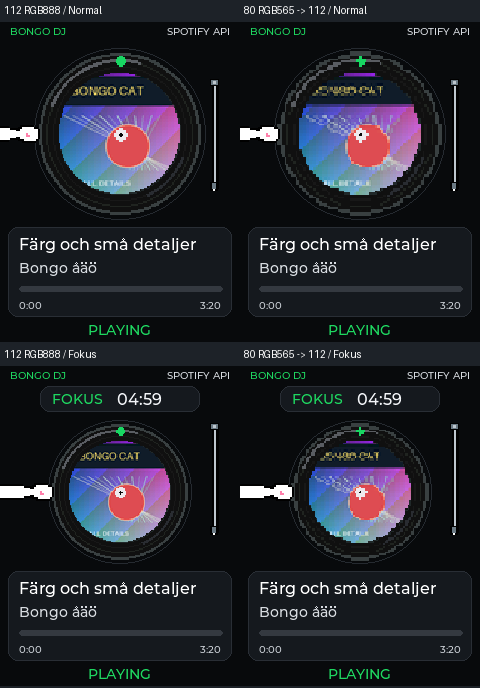
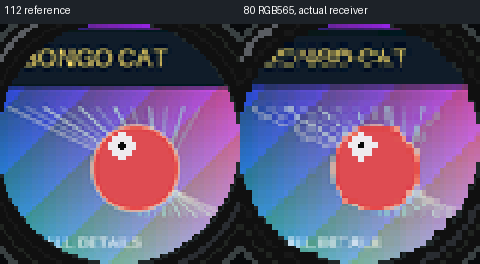

SIMULERAT, EJ TFT- ELLER FARTPROVAT. Samma pose, layout och syntetiska bildkälla. Faktisk packhjälpare, firmware-parser/CRC/staging/expansion och C++-skivrendering. UI/PIL-komposition kan skilja i kantpixlar från LVGL.

